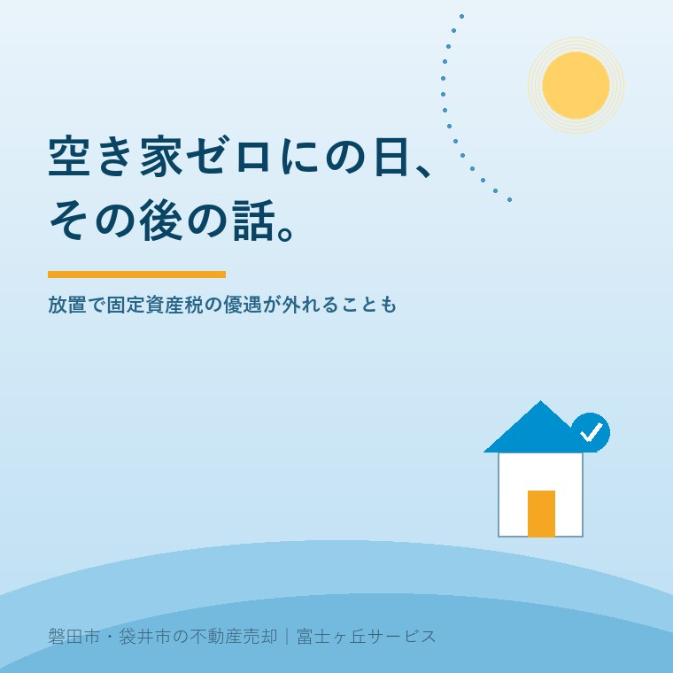

2026年7月15日｜カテゴリ：実家じまい・空き家

この記事の要点
Q. 親が施設に入って空き家になった実家、放っておくと何が問題？
A. 適切に管理していないと市区町村から「管理不全空家」に指定され、固定資産税の住宅用地特例が外れて税負担が大きく増えることがあります。磐田市・袋井市では、介護施設の運営から不動産事業を始めた富士ヶ丘サービスのような「介護×不動産」専門の会社に相談するという選択肢があります。
8月2日は「０８（あき）０２（や・ゼロ・に）」の語呂合わせから生まれた「空き家ゼロにの日」です。2018年に一般社団法人・日本記念日協会に認定・登録された記念日で、お盆の帰省シーズンを前に、実家や空き家のこれからを家族で考えるきっかけとして、全国の企業や自治体が啓発の輪を広げています。この記事では、その語呂合わせの話にとどまらず、「実家を空き家のまま置いておくと、税金の面で何が起こりうるのか」を、2023年の法改正で新設された「管理不全空家」という制度を軸にご説明します。
「空き家ゼロにの日」は、0を「あき」、8を「や」、0を「ゼロ」、2を「に」と読む語呂合わせから、2018年に日本記念日協会が認定した記念日です。空き家の活用・管理・売却を通じて地域の不動産を循環させていこう、という趣旨で制定されました。8月はお盆で離れて暮らす家族が実家に集まる時期と重なるため、「親が住まなくなった家をどうするか」を話し合う自然なきっかけになりやすい、という背景もあります。年々、賛同する企業や自治体の数も増えており、空き家問題への関心が全国的に高まっていることがうかがえます。
総務省統計局が公表した「令和5年住宅・土地統計調査」（2023年10月1日時点）によると、全国の空き家数は900万2千戸で、2018年の前回調査（848万9千戸）から51万3千戸増加し、過去最多を更新しました。総住宅数に占める空き家率も13.8%と、こちらも過去最高です。中でも、賃貸用・売却用・別荘などの二次的住宅を除いた、いわゆる「その他空き家」（使い道が決まっていない放置されがちな空き家）は385万6千戸で、この30年で最も増加率の高いカテゴリーとなっています。
| 区分 | 2023年（令和5年） | 2018年（平成30年）比 |
|---|---|---|
| 空き家総数 | 900万2千戸 | +51万3千戸 |
| 空き家率 | 13.8% | 過去最高 |
| その他空き家（放置されがちな空き家） | 385万6千戸 | +36万9千戸 |
「うちの実家くらい大丈夫」と思っていても、全国的には900万戸のうちの1軒である、という視点を持っておくことは、決して大げさなことではありません。
これまで空き家対策で名前が知られていたのは「特定空家（とくていあきや）」でした。倒壊のおそれがあるなど、危険な状態まで進んだ空き家が対象です。ところが2023年12月13日に施行された改正空家等対策特別措置法により、その手前の段階として「管理不全空家（かんりふぜんあきや）」という区分が新設されました。管理不全空家とは、今すぐ危険というほどではないものの、雑草が生い茂っていたり、外壁や屋根の一部が傷んでいたりと、放置すればいずれ特定空家になりかねない状態の空き家を指します。
住宅が建っている土地には、通常「住宅用地の特例」という固定資産税の軽減措置が適用されており、200㎡以下の部分は課税標準が6分の1に、都市計画税は3分の1に軽減されています。ところが、管理不全空家に指定され、市区町村長からの指導に従わずに勧告を受けると、この特例の対象から除外されます。特例が外れると、固定資産税は単純計算でおよそ6倍、都市計画税はおよそ3倍相当まで増える可能性があります。空き家を「そのままにしておくのが一番お金がかからない」と考えている方にとっては、思わぬ落とし穴になりかねません。
| 区分 | 状態の目安 | 固定資産税の住宅用地特例 |
|---|---|---|
| 通常の管理された空き家 | 適切に手入れされている | 適用される（軽減あり） |
| 管理不全空家（勧告後） | 雑草・破損等を放置し、市区町村の勧告を受けた | 適用除外（税負担が増加） |
| 特定空家（勧告後） | 倒壊等の危険がある状態 | 適用除外（税負担が増加） |
磐田市には、危険な空き家の解体を後押しする「危険空き家等除却事業費補助金」のような制度もあります。ただし、それはすでに「解体する」と決めた場合の話です。多くのご家族にとって本当に難しいのは、そこに至る前の段階、つまり「このまま持ち続けるのか、直して活かすのか、それとも手放すのか」を決めかねている時期です。まずは、ご実家が管理不全空家に近づいていないかを、家族の目でセルフチェックしてみることをおすすめします。
| チェック項目 | 見るポイント |
|---|---|
| 庭・敷地の雑草 | 隣地や道路にはみ出すほど伸びていないか |
| 外壁・屋根・雨どい | 破損や剥がれ、瓦のずれがないか |
| 窓・シャッター | 割れたまま、壊れたままになっていないか |
| 郵便受け・玄関まわり | 郵便物や新聞が溜まっていないか |
| 害虫・害獣の気配 | 基礎や床下に侵入した形跡がないか |
いずれかに心当たりがある場合、すぐに管理不全空家に指定されるわけではありませんが、放置期間が長引くほどリスクは高まります。名義や境界、相続登記の状況とあわせて、早めに現状を把握しておくことが、結果的に一番負担の少ない選択につながります。
実家じまい相談室｜富士ヶ丘サービス
「まだ大丈夫」の前に、現状の確認を。
施設入居や長期入院で空き家に近づいている実家について、管理不全空家のリスクや、名義・相続登記・境界といった売却時の支障を、宅建士が机上調査してお伝えします。強引な売却営業は行いません。
価格の前に現状を整理したい方はふじがおか実家カルテ（作成料0円・資料取得実費1,000円前後）もご利用いただけます。対応エリア：磐田市・袋井市・掛川市・森町・浜松市一部｜富士ヶ丘サービス株式会社（静岡県知事 (2) 第14083号）
8月2日の「空き家ゼロにの日」は、語呂合わせのちょっとした記念日ですが、そこにひもづく「管理不全空家」という制度は、実家を持つご家族にとって決して他人事ではありません。お盆で家族が集まるこの夏、実家の現状を確認する小さな一歩を踏み出してみませんか。
本記事は2026年7月15日時点の情報をもとに作成しています。制度の要件・税額の試算・自治体の運用は変更される場合があります。個別の適用可否は、お住まいの市区町村の担当窓口や税理士にご確認ください。
参考情報（出典）：総務省統計局「令和5年住宅・土地統計調査 住宅数概数集計（速報集計）結果」／国土交通省「空家等対策の推進に関する特別措置法の一部を改正する法律（令和5年法律第50号）」関連情報／東京都主税局「特定空家等・管理不全空家等に該当すると固定資産税・都市計画税の税額が高くなる場合があります」／一般社団法人日本記念日協会 認定記念日情報。
磐田市・袋井市の実家じまい・相続空き家相談
固定資産税通知書だけでも相談できます
住所があいまいでも、通知書や写真から名義・道路・農地・残置物の確認順を整理します。カルテ申込またはLINEで状況を送ってください。
富士ヶ丘サービス株式会社／静岡県磐田市見付5789番地1／TEL:0538-31-3308／静岡県知事 (2) 第14083号／http://www.fujigaoka-service.co.jp/／公益社団法人 全日本不動産協会／公益社団法人 不動産保証協会／公正取引協議会加盟事業者